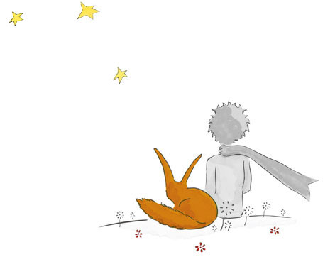

lee’s portfolio
어느 날 여우에게 내가 물었다. 너에게 길들여지면 편안해질 수 있을까?
늙은 여우와 동행하기, 혹은 여우에게 속지 않기, 앓지 않기 ...

장미 해 별 늙은 저녁
문제는 말이야 장미가 너무 커져버린거야
바오밥나무들을 내안의 바람과 흔들리게 해버린 거야 알겠지만 장미는 뽑아버리면 그만이거든

어느 날 마흔세 번이나 해지는 것을 보았어
누구나 슬픔에 잠기면 석양을 좋아하게 된다는 걸 장미와 나는 알고 있었어...
나는 얼굴이 빨간 신사가 살고 있는 별을 알아
어느 누구 하나 와도 이별의 말을 해 본적이 없으면서 '너는 벙어리 여우야!' 라고만 네게 소리쳤겠지...
길들인다는 건 너무나 쉽게 잊혀져 가는 거지.
난 네가 필요하지 않고. 장미 역시 내가 필요하지 않아. 너는 수십만의 여우들과 같은 여우에 불과하니까.
하
지
만
너
에
게
길
들
여
지
면
편
안
해
질
수
있
을
까
?